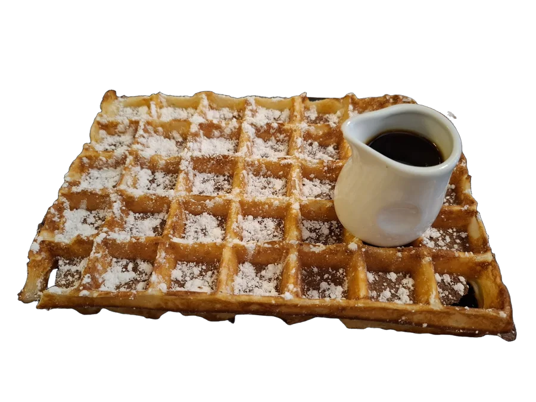
Brusselse wafel
Licht en krokant, met poedersuiker of warme chocoladesaus.
Tea-room en restaurant in Blankenberge, sinds 1949
Brusselse wafels, verse pannenkoeken, ijs en koffie, op twee minuten van de dijk.
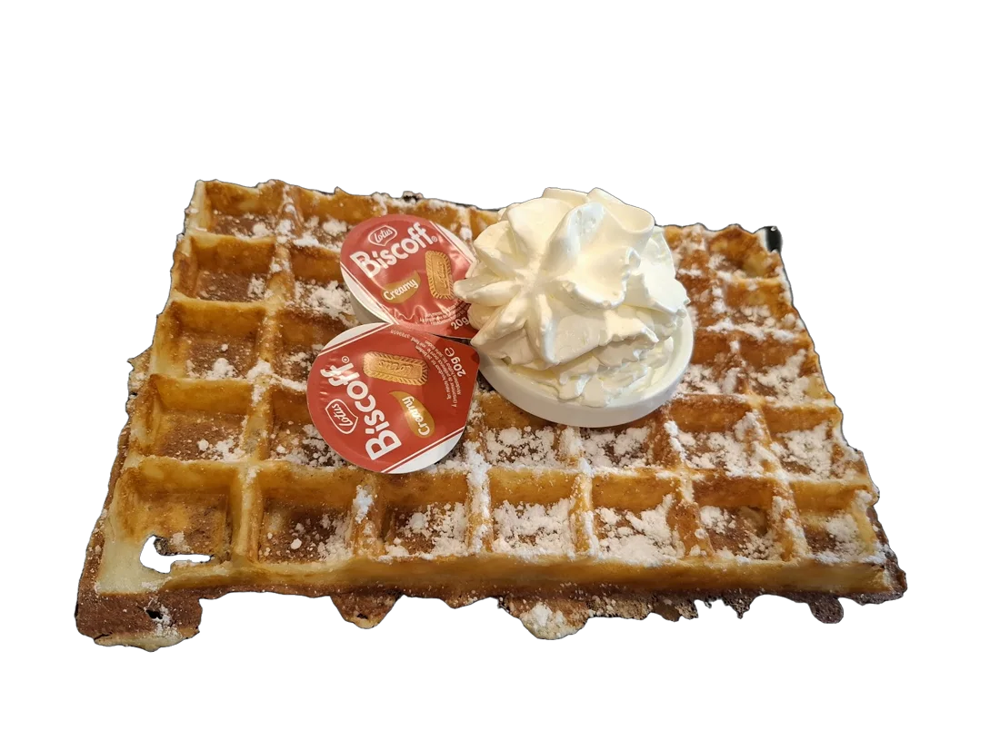
Alles wordt vers gemaakt wanneer u bestelt. Ook croques, toasts en salades voor wie liever hartig eet.

Licht en krokant, met poedersuiker of warme chocoladesaus.
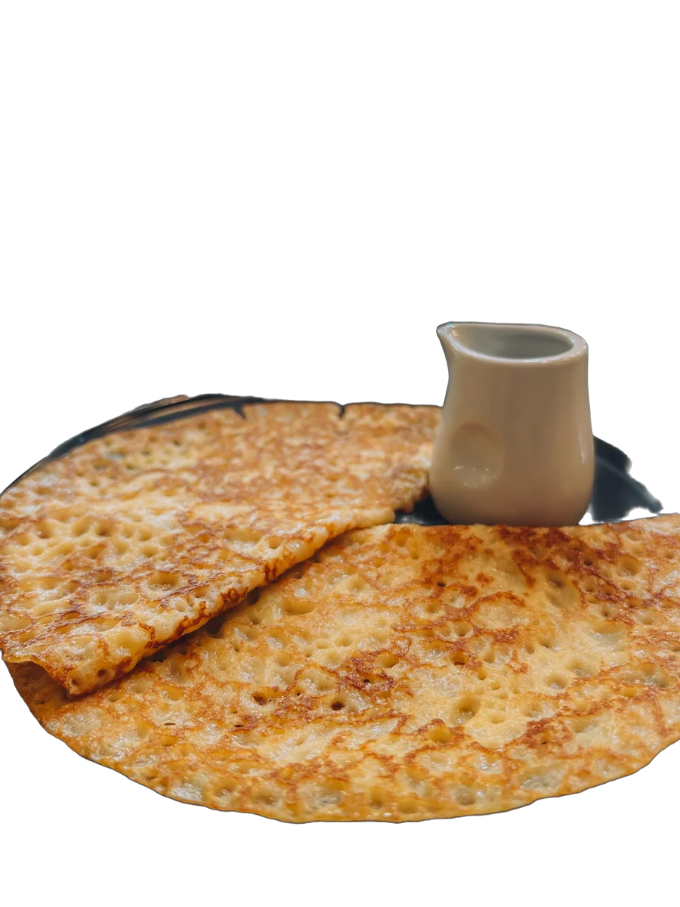
Vers gebakken, nooit voorgebakken. Met suiker, siroop of confituur.
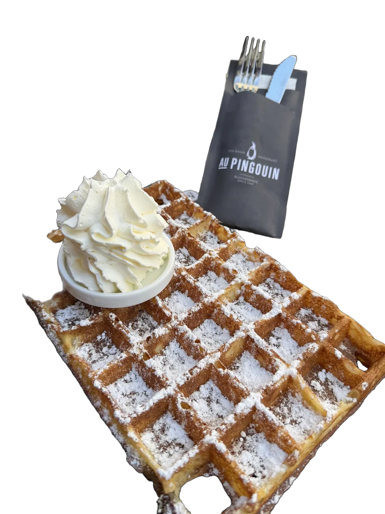
De klassieker, met een flinke toef verse slagroom.
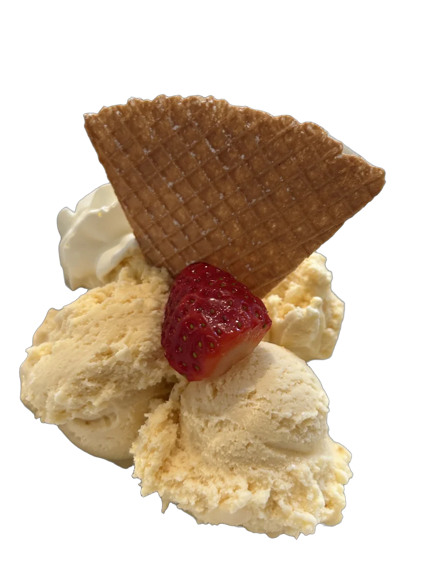
Vanille-ijs, slagroom en een krokant wafeltje.
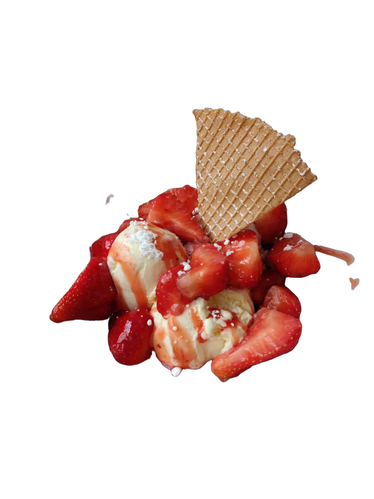
Verse aardbeien, ijs en saus. De zomer in een coupe.
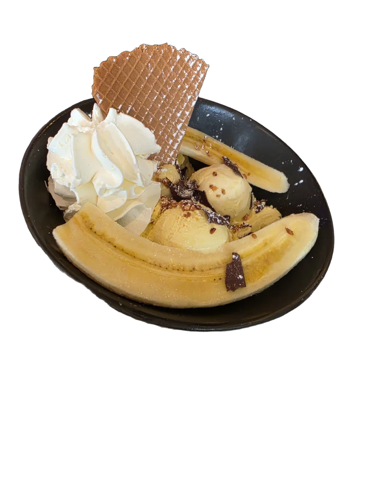
Banaan, drie bollen ijs, chocolade en slagroom.
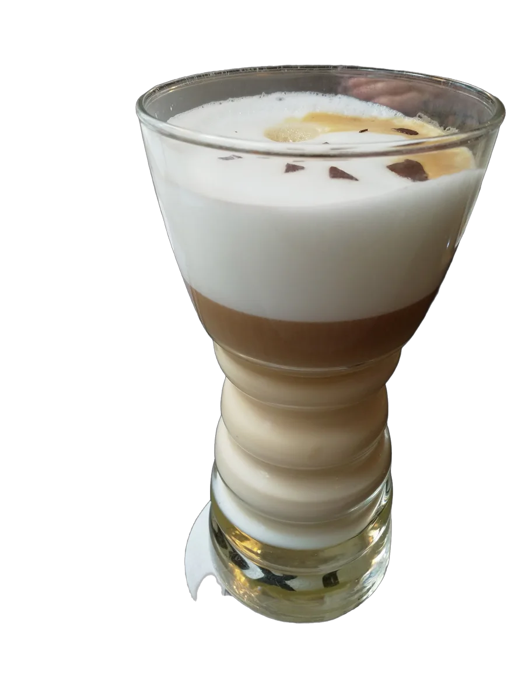
Of een cappuccino, een thee, een milkshake. Om bij de wafel te nemen.
Ook croques, toasts, salades, milkshakes en thee. Vraag naar de kaart van de dag.
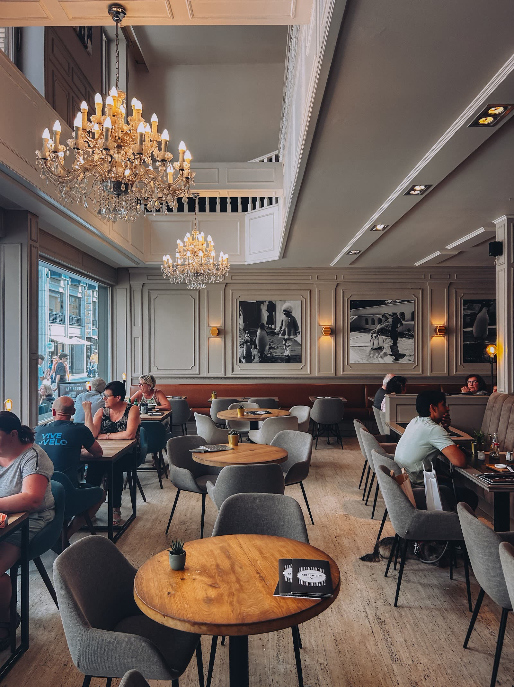
Een lichte zaal met kroonluchters, midden in de winkelstraat. Even weg van de drukte op de dijk.
Au Pingouin bestaat sinds 1949. Generaties badgasten kwamen hier voor een wafel na het strand, en hun kleinkinderen doen het nu nog.
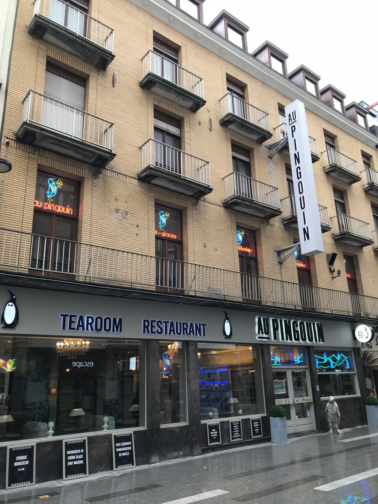
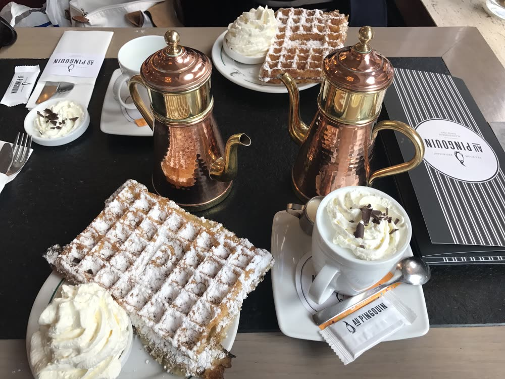
“Gekend voor de reuzenwafels. De pannenkoeken zijn lekker en vers (geen voorgebakken gedoe). Vriendelijke bediening.”
“De Brusselse wafels zijn er heerlijk! Ondanks de drukte maken we hier graag een tussenstop.”
“Mooie en verzorgde zaak, vlotte bediening, en heerlijke wafels en pannenkoeken. En hun koffie is heerlijk. Komen hier zeker terug.”
Kerkstraat 33, 8370 Blankenberge
+32 476 63 32 35
Buiten het seizoen open in het weekend. In de zomer elke dag vanaf 11u30.